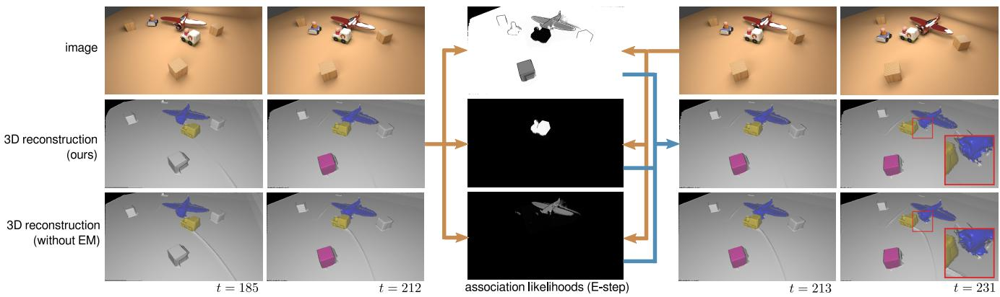
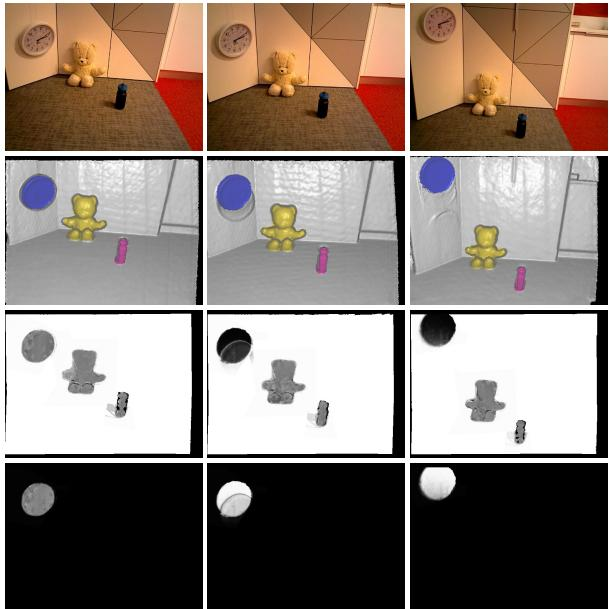

本节目标
读完你应能：① 解释为什么对象级 SLAM 要从 surfel 换到 octree / TSDF 体素（自由空间）；② 讲清 MID-Fusion 怎么用 Mask R-CNN + 几何 + 运动三线索检测并独立追踪物体，关联靠 IoU>0.5；③ 讲清 EM-Fusion 怎么用 EM 把「像素属于哪个物体」做成概率、用存在概率删物体；④ 对照两篇的实时性代价（2–3 Hz vs 100+ ms）。
和前面课程怎么接
0159 结尾点过 surfel「没有自由空间」的天花板，本课是第一次真正换表示来补它——octree / TSDF 体素能存自由空间与连通性。0160 的「每物体一个模型、关联靠几何+语义」在这里升级为「体素对象级 + IoU/EM 关联」。0005 用 NDT 看「对不上」、0153 起的动态块用运动残差判动——MID-Fusion 的前景检测同样混用了「运动残差」，是跨块的同族思想。八叉树实现细节也回链第六季体素哈希 / octree 课。
1. 为什么要换体素
0159 说过 surfel 只存表面、没有自由空间；0160 的 Co/MaskFusion 也仍是 surfel。可一旦要做「对象级」——每个物体独立建模、还要知道物体之间、物体和空地之间的空间关系——surfel 就不够了。于是这两篇（2019）一起把地图表示换成了体素 / TSDF，而且用 octree（八叉树）来组织，让「能装空间」这件事第一次在语义块里落地。
通俗点：surfel 像「在物体表面贴满便利贴」；体素像「把整个房间切成乐高小方块，实心块写物体、空心块写自由空间」。后者天然能回答「这块地方能不能站人」。
2. 体素挂语义与八叉树自适应
怎么看这张图：① 体素让「自由空间」第一次可被显式存储；② octree 用自适应的粗细省内存——近处细、远处粗；③ 这正是 MID-Fusion 用的「octree 体素 TSDF」表示。
要记住的一句话：换了体素，地图才「装得下空间」；octree 让这种装法既精细又不爆内存。
怎么看这张图：① 两边画的其实是同一个房间和同一把椅子（绿色格子）；② 左图不管有没有东西，16 格都得分配内存；③ 右图只把有椅子的那个角往下细分，其余三块大格子直接标记成「空」——这一步同时省了内存、又明确了「这里是自由空间」；④ 注意右图那三块大格子不是没存，而是「一格代表一大片空」，这正是导航要的信息。
要记住的一句话：八叉树的自适应分辨率是为了「把算力和内存花在有东西的地方」，而它顺带保住的「空的地方」恰恰是自由空间——这是面元路线拿不到的东西。
3. MID-Fusion：octree 对象级 + 三线索检测
MID-Fusion（AAAI 2019，Xu 等，帝国理工）把每个物体建成一份octree 体素 TSDF（体素约 1 mm，基于 Supereight）。它检测「哪些像素属于前景物体」用的是三线索联合：Mask R-CNN 实例分割 + 几何边缘 + 运动残差，合出一个「前景概率（foreground probability）」，再按物体独立追踪。
物体位姿是 object-centric（以物体自身为坐标原点），不是把物体当「虚拟相机」，这样旋转、平移都更自然。相机位姿则用测量不确定性加权（Cauchy 损失）来追踪。

怎么看这张图：这是 MID-Fusion 的总览：输入 RGB-D，输出「对象级稠密体素地图」——既处理动态物体、又忽略人。注意它标出的每个物体都是独立模型，且是体素表示的重建（不再是 surfel 表面）。这是「对象级 + 体素」第一次合体。

怎么看这张图：左中右三列对比 MID-Fusion 和 0160 的 Co-Fusion。关键差异在表示：Co-Fusion 是 surfel（只表面），MID-Fusion 是 octree 体素（能填满空间、存自由空间）。这正呼应本课第 1–2 节说的「换体素补自由空间」。
4. MID-Fusion 的关联：IoU > 0.5
「这一帧的物体是不是上一帧那个」怎么判？MID-Fusion 用了一个很直白的几何判据：把已有物体的渲染 mask和当前帧的局部 mask求交并比（IoU），大于 0.5 就认为是同一个物体，继续追踪；匹配不上就新建一个。它不做 EM、也不做匈牙利匹配，就是纯几何 IoU 判据——简单、够用。
怎么看这张图：① 这是 MID-Fusion 关联的核心判据，简单直观；② IoU>0.5 意味着「七成以上重合才信是同一个」，太松会合并、太紧会拆开；③ 它比 0160 的「>3% 离群就开新模型」更依赖形状重合，更适合物体级。
要记住的一句话：MID-Fusion 的关联 = 渲染 mask 与帧 mask 的 IoU 是否过 0.5。
5. EM-Fusion：把关联做成概率
EM-Fusion（ICRA 2019，Strecke & Stückler，MPI）换了个更「软」的思路。它不硬判「这个像素属于物体 A 还是 B」，而是用 EM（期望最大化）算法估计每个像素属于各个物体的概率。E 步（期望步）算出联合分布下的关联似然，M 步（最大化步）据这些软关联去更新物体位姿——交替迭代。
这句话在说什么：「当前像素属于物体 $c_t$ 的概率」等于「假设它属于 $c_t$ 时、观测数据有多像」除以「所有可能物体（含背景）的同样似然之和」。用人话说：不直接投票给某个物体，而是给每个候选都打一个「归属概率」，谁的概率高就偏谁，但永远保留「可能是别的」的余地。这种「软关联」对遮挡、噪声特别友好。

怎么看这张图：这张总览点明 EM-Fusion 的卖点——「概率数据关联」在 EM 框架里推断像素与物体的关联似然，从而提升追踪/建图的鲁棒性，并隐式处理遮挡。这正是「软关联」相比硬 IoU 的关键优势。

怎么看这张图：第 3–4 行就是 E-step 输出的「归属概率图」：越白表示越像该物体（背景 / 钟）。它不是非黑即白的掩码，而是一张灰度概率——这正是公式里 $p(c_t \mid z_t,\theta)$ 的可视化。
6. 软关联 + 存在概率删物体
EM-Fusion 还有两个细节很实用。一是追踪用直接 SDF 对齐（不是 ICP 迭代最近点），配 Huber 范数 + IRLS / Levenberg-Marquardt，对离群更稳。二是它给每个物体维护一个存在概率 $p_{ex}$：如果某物体长期「对不上」、存在概率掉到 0.1 以下就直接删掉。这比 MID-Fusion 的硬阈值更平滑——关联偶尔错一下不会立刻误删，长期错才清掉。
怎么看这张图：① 软关联不强迫二选一，所以个别帧判错不会立刻炸；② 配合「存在概率 <0.1 才删」，系统对短暂遮挡/误检更鲁棒；③ 这是 EM-Fusion 相对 MID-Fusion 的核心差异。
要记住的一句话：把关联从「非黑即白」改成「打概率」，是对象级 SLAM 抗噪的关键一招。
7. 实时性与局限
两篇都明显比前面的 surfel 系更「重」。MID-Fusion 不含 Mask R-CNN 时约 2–3 Hz（CPU），物体一多（25+）就掉到约 400 ms/帧；EM-Fusion 106–257 ms/帧（GPU），更非实时。共同点是都依赖 Mask R-CNN 的频率——检测器慢，整体就慢。
作者自陈的局限也诚实：MID-Fusion 实时性随物体数下降；EM-Fusion 不区分动态/静态物体，会浪费算力去追踪大量本就静止的物体（这也被综述文点名）。这两点正好留给后面的 PanopticFusion（统一 stuff+things）和对象 SLAM 框架（更省力的关联）去补。
互动判断
EM-Fusion 用 EM 做数据关联，相对 MID-Fusion 的硬 IoU 关联，主要多了什么能力？
读完你应该能回答
- 对象级 SLAM 为什么要从 surfel（0159/0160）换到 octree / TSDF 体素？「自由空间」为何重要？
- MID-Fusion 靠哪三线索检测前景物体？它的关联判据是什么（阈值多少）？
- EM-Fusion 的 EM 在算什么？公式 $p(c_t \mid z_t,\theta)$ 用一句话怎么翻译？
- EM-Fusion 的「存在概率 <0.1 删物体」相比 MID-Fusion 的硬阈，好在哪？
- 两篇的实时性代价各是多少？共同瓶颈是什么？